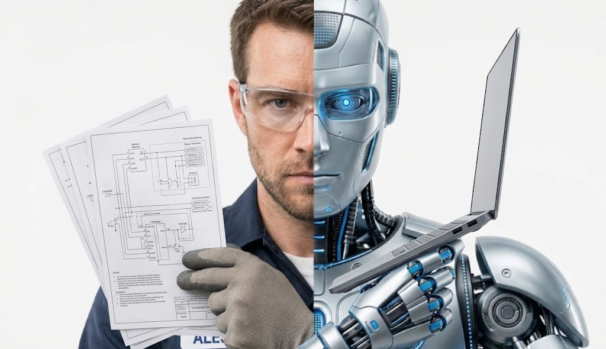

Découvrez comment l'IA générative et l'apprentissage automatique décuplent les capacités humaines en transformant les professionnels en véritables « super-décideurs ».

Écriture manuelle ligne par ligne de la syntaxe, débogage fastidieux et recherche constante dans la documentation technique.
Génération automatique d'architectures complètes en langage naturel, le développeur devient un chef d'orchestre de code.
Analyse visuelle manuelle de centaines d'imageries médicales à la recherche de micro-anomalies ou de tumeurs.
Pré-détection instantanée des zones suspectes par l'IA avec calcul de probabilités pour assister le diagnostic précis.
Création manuelle de maquettes, détourage long de visuels et production d'itérations graphiques chronophages.
Prototypage visuel immédiat, création de concepts visuels en quelques secondes et déclinaisons automatisées.
Étude sur l'augmentation de la vitesse et de la qualité du travail chez les professionnels utilisant des assistants IA.
Analyse de la transition vers de nouvelles méthodes de travail collaboratives entre humains et réseaux de neurones.
Rapport complet sur la valeur économique générée par la transformation des métiers traditionnels par l'IA.
 IA &
IA &